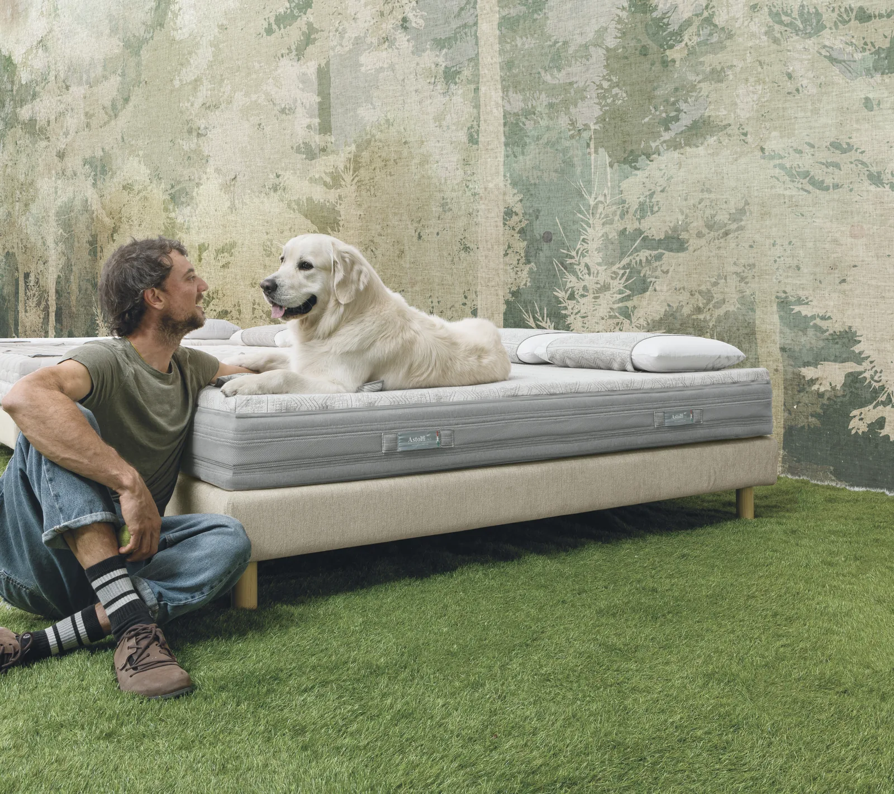

Astolfi produce materassi e sistemi letto di alta qualità, componibili e ricchi di specifiche tecniche. Proprio quella ricchezza era il problema: difficile da comunicare senza scoraggiare il cliente. Abbiamo dato a chi compra un assistente AI che lo guida nella configurazione, una scelta alla volta.

I materassi componibili di Astolfi hanno un valore reale: ogni strato, ogni materiale, ogni configurazione risponde a un'esigenza precisa. Ma più un prodotto è ricco di specifiche, più è difficile raccontarlo. Spiegare tutto rischia di diventare troppo tecnico e di confondere; spiegare poco svaluta il prodotto.
Il nodo era doppio: comunicare le caratteristiche distintive dei prodotti e gestire l'interazione con il cliente, che davanti a troppe opzioni tende a bloccarsi o a rimandare l'acquisto. Serviva qualcosa che facesse da ponte tra la competenza tecnica dell'azienda e il linguaggio di chi sta semplicemente cercando di dormire meglio.
Abbiamo sviluppato un assistente virtuale basato su intelligenza artificiale, addestrato specificamente sui prodotti Astolfi. Non un chatbot generico: un consulente che conosce il catalogo e offre una consulenza one-to-one a ogni cliente.
L'assistente guida l'utente passo dopo passo nella configurazione del materasso, spiega ogni fase in modo chiaro e comprensibile e risponde solo alle domande rilevanti in quel momento. Niente muro di specifiche tutte insieme: la scelta giusta arriva una decisione alla volta. Il risultato è un processo d'acquisto più fluido e personalizzato, dove il cliente capisce davvero cosa sta scegliendo e perché.
È un esempio concreto di AI messa dove serve: non per stupire, ma per togliere attrito a un momento preciso del percorso d'acquisto. Lo strumento serve al problema, mai il contrario.